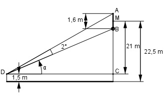
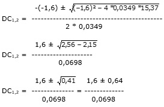

Aufgabe 225 Eine Turmuhr hat einen Durchmesser von 1,6 m, ihr Mittelpunkt liegt 22,5 m hoch. Aus welchem Abstand a erscheint sie unter einem Sehwinkel von 2°, wenn die Augenhöhe des Betrachters 1,5 m beträgt?

Im Dreieck DCB: 21 m – 0,8 m 20,2 m tan α = --------------- = ---------- DC DC Im Dreieck DCA : 21 m + 0,8 m 21,8 m tan (α + 2°) = --------------- = --------- DC DC Umformung : tan α + tan 2° 21,8 m tan (α + 2°) = -------------------- = --------- 1 – tan α * tan 2° DC Eingesetzt: 20,2 m --------- + 0,0349 DC 21,8 m ----------------------- = --------- 20,2 m DC 1 - --------- * 0,0349 DC 20,2 m + DC * 0,0349 ----------------------- DC 21,8 m ------------------------- = --------- DC – 20,2 m * 0,0349 DC ----------------------- DC Gekürzt: 20,2 m + DC * 0,0349 21,8 m ---------------------- = ---------- DC – 20,2 m * 0,0349 DC Über Kreuz multipliziert: DC * (20,2 m + DC * 0,0349) = = 21,8 m * (DC – 20,2 m * 0,0349) DC * 20,2 m + DC2 * 0,0349 = = DC * 21,8 m – 15,37 -DC * 21,8 m DC2 * 0,0349 + DC * (20,2 – 21,8) = -15,37 |+15,37 0,0349 * DC2 - 1,6 * DC + 15,37 = 0 A,B,C – Formel : A = 0,0349, B = -1,6, C = 15,37
1,6 + 0,64 DC1 = ------------- = 32,1 m = a1 0,0698 1,6 – 0,64 DC2 = ------------ = 13,8 m = a2 0,0698